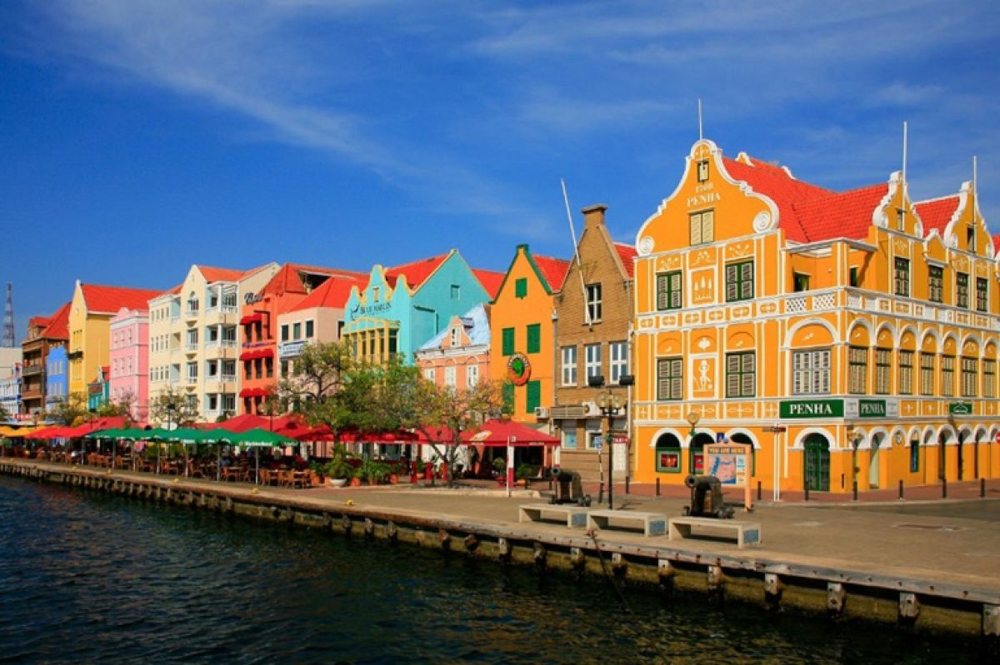

Islas Galápagos
Las islas fueron declaradas Patrimonio de la Humanidad en 1978, el archipiélago tiene como mayor afluente de ingresos el
turismo, ya que recibe 200.000 turistas al año. Además, se ha desarrollado el turismo ecológico con el fin de preservar las
especies.
Galápagos es conocida por sus numerosas especies endémicas y por los estudios de Charles Darwin que le llevaron a establecer
su teoría de la evolución por la selección natural. Son llamadas Las Islas Encantadas, denominación que se ganó el archipiélago
en el siglo XVI por su grandiosa biodiversidad de flora y fauna, heredando el nombre por generaciones. La región fue el
hábitat del Solitario George, el último espécimen de la raza tortuga gigante de Pinta, extinta el 24 de junio del 2012.
Las islas también son hábitat de especies como tortugas marinas, iguanas, lagartos, cormoranes, albatros, leones marinos y
pingüinos.
México
México es un gran mosaico que combina preciosos escenarios naturales, ciudades con herencia prehispánica, colonial y moderna,
una amplia variedad de manjares exquisitos que deleitan paladares, y fascinantes tradiciones que cautivan al visitante.
Desde la playa hasta la montaña, del desierto a la selva, de la zona arqueológica a la vibrante metrópoli, de lo dulce a lo
picante, de la tranquilidad a la algarabía de sus fiestas, México tiene todo lo que busca el turista, que es bien recibido por
la calidez de su gente. México tiene 32 estados para enamorarte.
Machu Picchu
Al recorrer Machu Picchu, se puede observar dos sectores bien marcados y divididos por un muro de aproximadamente 400 metros
de largo: uno orientado a fines agrarios y otro más urbanístico. El área agrícola se caracteriza por la presencia de terrazas
o andenes que servían para el cultivo de diversos alimentos. Muy cerca a esta zona, se hallan algunas pequeñas viviendas que
pudieron ser morada de los agricultores.
Por otro lado, en el casco urbano se localizan la Residencia Real, que era la vivienda más fina, extensa y mejor distribuida
del lugar; la Plaza Sagrada, principal recinto ceremonial de la ciudad, la Pirámide Intihuatana, donde está ubicado el gran
reloj solar; el Grupo de las Tres Portadas, conjunto de edificios conformado por tres grandes portales y el Grupo del Cóndor,
que incluye templos de uso ceremonial.
Curazao
Curazao, una isla neerlandesa del Caribe, es conocida por sus playas ubicadas en ensenadas y sus extensos arrecifes de coral con abundante fauna marina. La capital, Willemstad, tiene arquitectura colonial en colores pastel, el puente flotante de la Reina Emma y la sinagoga Mikve Israel-Emanuel del siglo XVII, con un piso de arena. También es una vía de acceso a las playas occidentales, como Bahía Azul, un sitio popular de buceo.
New York
Nueva York se ha convertido en los últimos años y por méritos propios en la capital económica y cultural más importante del
mundo. La ciudad ofrece un ambiente y un estilo de vida único difíciles de explicar en una guía de Nueva York, hay que vivirlo
y disfrutarlo.
Asistir a un musical en Broadway, pasar una noche en Times Square, recorrer de un lado a otro el Puente de Brooklyn, disfrutar
de una tarde de compras en la Quinta Avenida o sentirte como un broker en Wall Street, son algunas de las cosas que sólo se
pueden hacer en Nueva York.